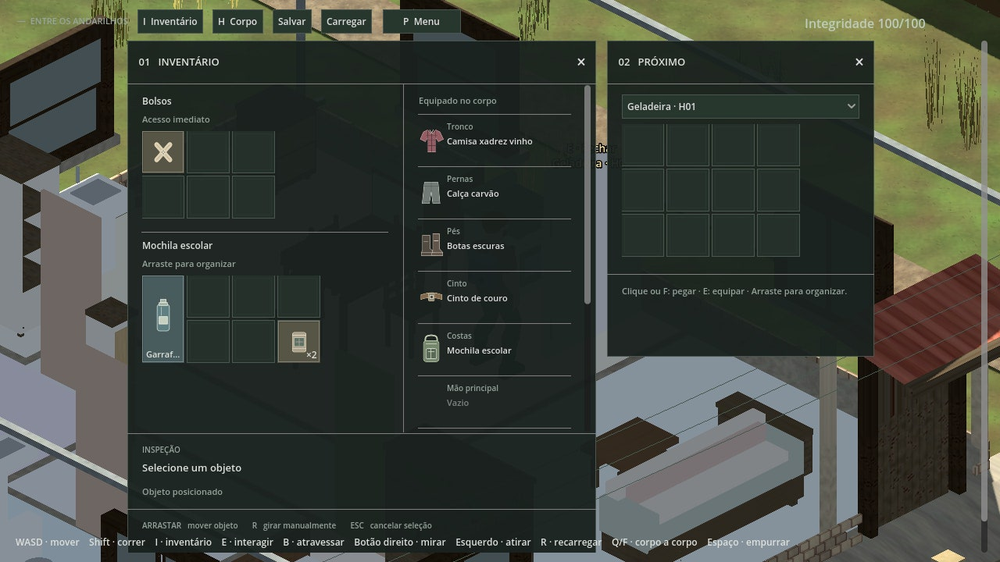
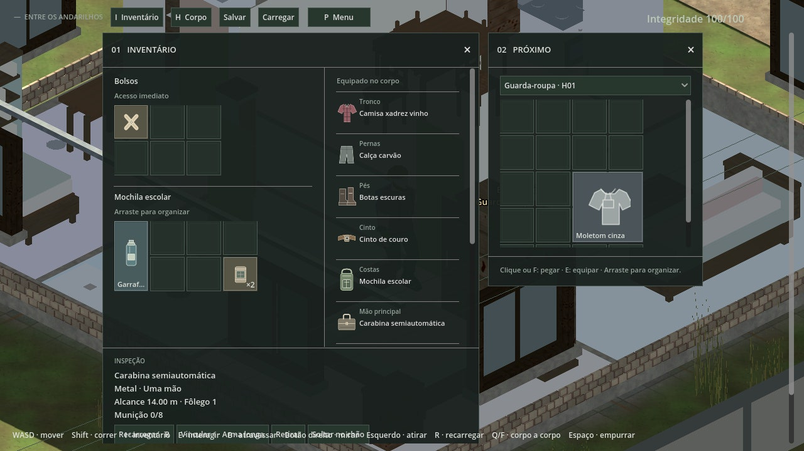
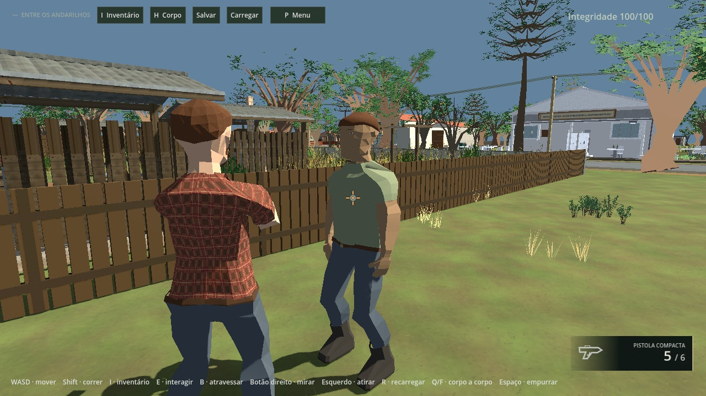
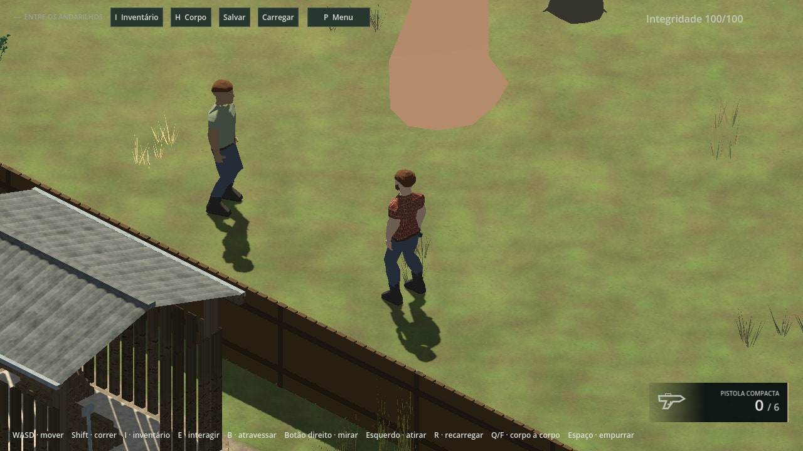

Tiros próximos corrigidos. Humanos protegidos. Transições de mira sem escala acumulada.
| No inventário | Resultado |
|---|---|
| Clique simples ou F sobre item externo | Guardar em espaço livre da mochila; sem mochila, tentar os bolsos. |
| E sobre item ou seleção | Equipar pela transação existente. |
| Arrastar | Manter a célula e orientação escolhidas manualmente. |
Passaram 208 verificações R116 e as 111 regressões de portas, janelas, cercas e salvamento. A revisão inclui 150 ciclos de mira com caminhada, nas três armas, além de tiros entre 0,6 e 3 m. Os 480 zumbis persistentes e nove humanos foram preservados.
A medição local da câmera de ombro ficou em 66.4 FPS neste ponto, a 1280×720 e sem limitador. O comparativo variou entre execuções e não estabelece outro ganho consistente de FPS. O próximo foco continua em cenário, vegetação e sombras. Relatório completo e método.




Verificações R116 · Regressões anteriores · Reprodução antiga · Visibilidade sem cache · Visibilidade revisada